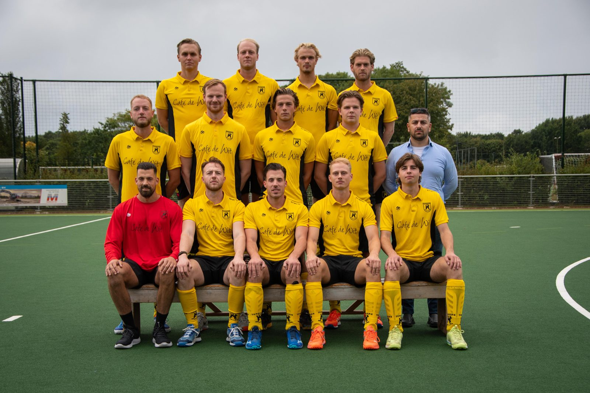

Hockey
HC Terriërs
Ik hockey al heel mijn leven, eerst bij de Terriërs. Daarna heb ik de stap gemaakt naar Bloemendaal en daar de hele jeugd doorlopen, en in de jeugd van het Nederlands elftal gezeten. Daarna ben ik teruggegaan naar de Terriërs in een vriendenteam. Met dat team hebben we een aantal jaar bij Westerpark in Amsterdam gespeeld en sinds dit jaar spelen we weer bij de Terriërs.
Waarom ik het leuk vind
Hockey speel ik nu samen met mijn vrienden in één team. Hierdoor ben je twee keer per week semi verplicht op het veld aan het samenspelen. Naast dat het leuk is om wedstrijden te winnen, speel jenatuurlijk ook voor de derde helft. Gezellig met zijn allen op het balkon bij de Terriërs biertjes drinken in de zon, gelukigger kan je mij dan niet maken.
Carrière
• 2007-2014 HV De Terriërs (Jeugd)
• 2014-2019 HC Bloemendaal (Jeugd)
• 2019-2020 HV De Terriërs - Heren 2
• 2020-2021 HV De Terriërs- Heren 1
• 2022-2025 HC Westerpark - Heren 2
• 2025-heden HV De Terriërs - Heren 2